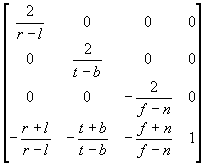

#include <nitro/fx/fx_mtx44.h>
void MTX_PerspectiveW( fx32 fovySin, fx32 fovyCos, fx32 aspect, fx32 n, fx32 f, fx32 scaleW, MtxFx44 * mtx );
| fovySin | Sine value of (the field-of-view angle in y-direction)/2 |
| fovyCos | Cosine value of (the field-of-view angle in y-direction)/2 |
| aspect | Ratio of width of view field to height of view field (aspect ratio: width/height of the field of view) |
| n | Distance from viewpoint to the near clipping plane |
| f | Distance from viewpoint to the far clipping plane |
| scaleW | Precision adjustment parameter for the view volume |
| mtx | Pointer to a 4x4 matrix. |
None.
*This function sets a perspective projection matrix to *mtx.
The diagram shows the matrix that is set.
 × scaleW
The divider is used internally. Refer to Divider Usage Notes when using this function inside an interrupt.
MTX_Perspectve, G3_PerspectiveW, G3_Perspective
2004/06/21 Initial version.
CONFIDENTIAL